全国中小学生学籍管理系统操作指南
作者：TeliuTe 来源：基础教程网
三、学籍注册 返回目录 下一课本节学习如何为小学一年级新生注册学籍；
0）登录学籍系统，先按照上一课里的操作，添加年级和班级；
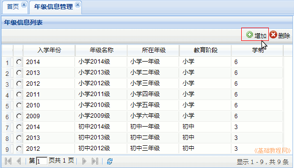
1）登录学籍系统，依次点“学籍管理－学籍注册－学前调档名单管理”。这里可以导出有接续码的新生信息表；
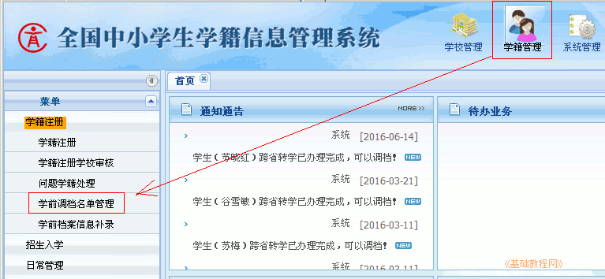
2）在右边的面板中，点中间的“Excel导入”按钮。这里可以批量导入待匹配的新生；
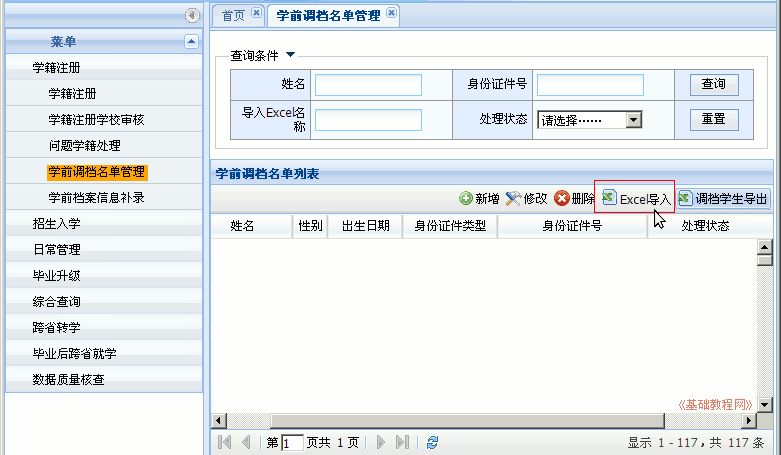
3）在出来的面板，点右上角的“下载模板”，保存一个空的“学前调档名单模板.xls”表格
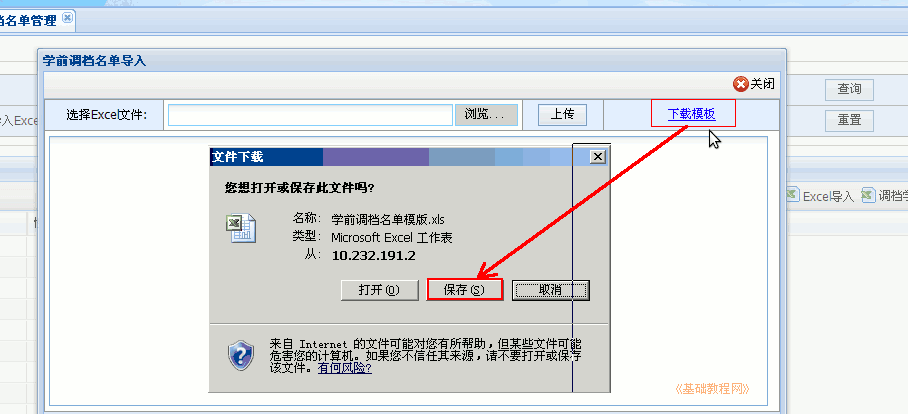
4）将所有要招收的一年级新生，录入到模板文件中，保存文件；
5）如果能联系当地幼儿园学籍管理员，可以导出大班学生信息，选择性粘贴到模板文件中，减轻录入工作量，
还可以使用在线调查、在线表格等收集学生信息，提前按照调档导出模板设计好 ；
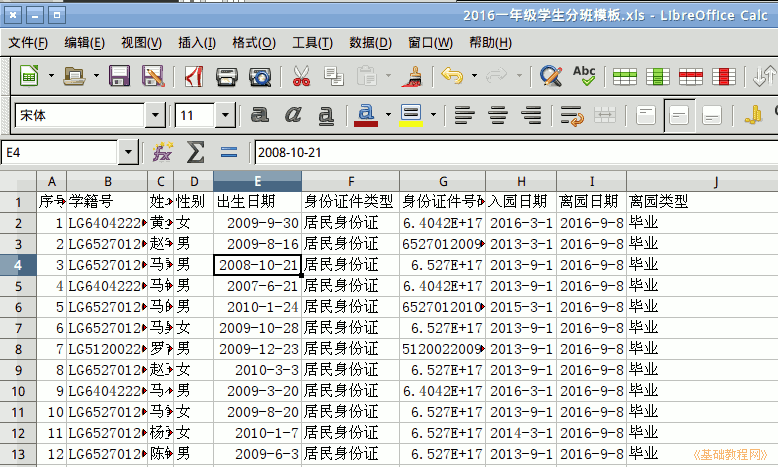
6）将所有要招收的一年级新生，录入到模板文件中，检查无误保存好，再回到“Excel导入”面板，点“浏览－上传”，导入到系统中；
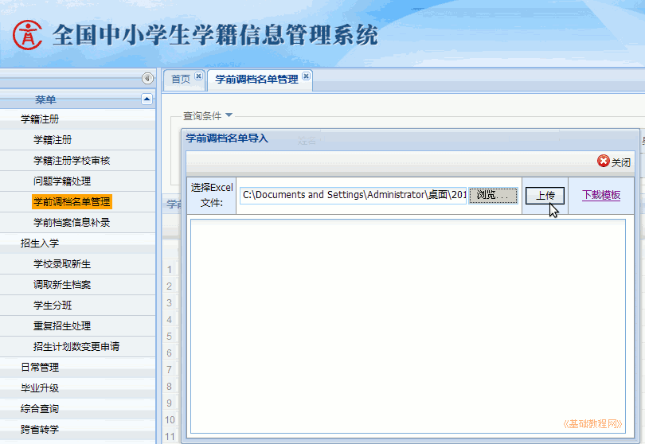
7）导入成功后，面板下面会列出导入学生，有幼儿园学籍的就匹配，没有的就显示未查到；
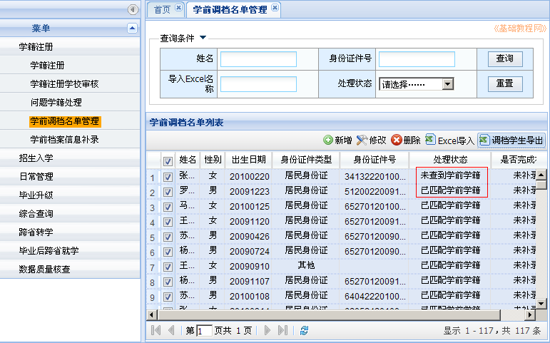
7.1）如果导入了多个Excel模板，默认会显示全部学生，这时可以在上边的查询框里，找到“导入Excel名称”，选择刚导入的模板，点右边“查询”，就可以显示当前导入的学生；
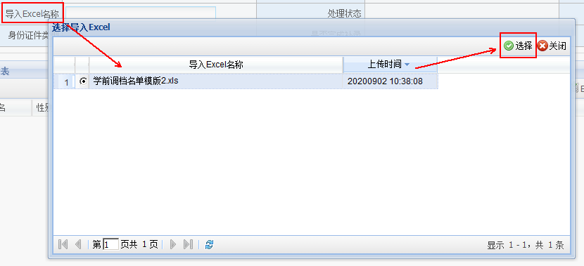
8）如果有红色链接，表示学生匹配不确定，需要点进去确认一下；
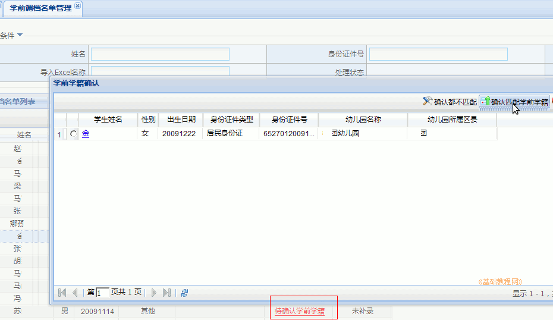
9）处理完待确认学生后，全部选中，点右边的“调档学生导出”链接，得到一个带接续码的学生信息表“调档学生导出.xls”；
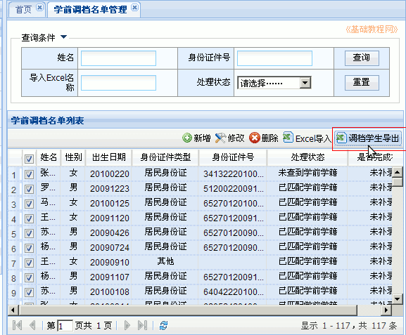
10）将电子表格里的学生信息补充完整后，进入下一步，红色必填，这一步工作量很大，也可以先补录，然后再调档学生导出；
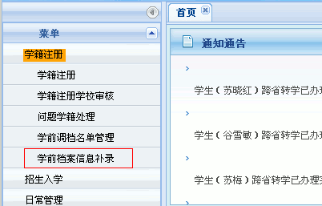
11）如果导出时IE下载被阻止，进入浏览器的“Internet选项－安全－自定义级别”，找到下边的下载提示，点“启用”；
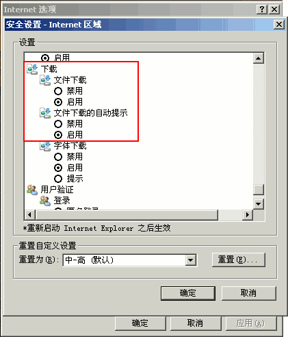
2、小学新生注册
1）点右上角第二个“学籍管理”按钮，然后在左侧栏点第一个“学籍注册－小学新生注册”链接；
2）在右边的窗口中，选择第一个“居民身份证”，点“导入”；
3）在出来的面板中，依次点“浏览”找到填好的调档学生导出表，在业务类别中选择“居民身份证小学新生注册”，点右边的“上传”按钮；
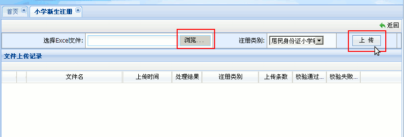
4）稍等提示上传完成，点下方的刷新按钮，刷新一下，看处理结果是否成功，如果“失败”点击蓝色链接，查看错误原因，将错误的改正，重复的删除，再重新上传；
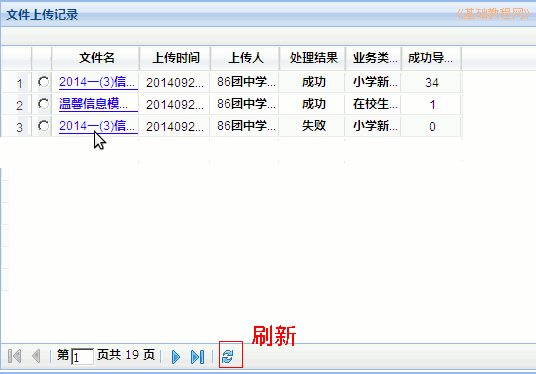
5）再在左侧栏点“小学新生注册学校审核”链接，在右边面板中，看一下总人数；
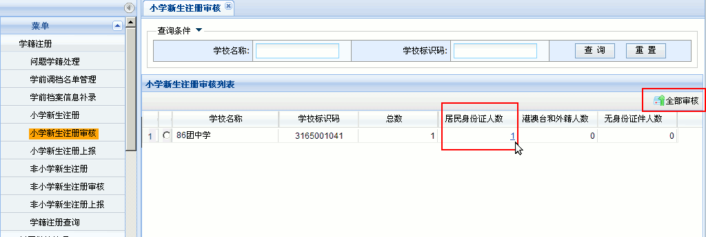
6）再点“居民身份证人数”，选择“查重通过”，点“查询”，看一下人数，点“全部审核-全部审核通过”；
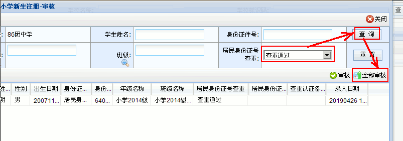
7）如果还有查重有问题的学生，再点查重里的“请选择”，“查询...”，记下名单，全部审核-全部审核不通过，修改后重新调档导出 - 注册；
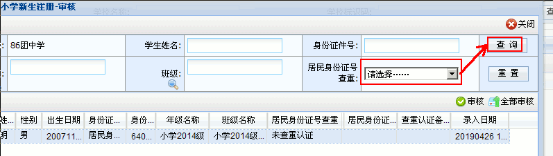
8）全部审核完成后，再点击右侧的“小学新生注册上报”按钮，选中，点“全部上报”，等待上一级管理员审核，
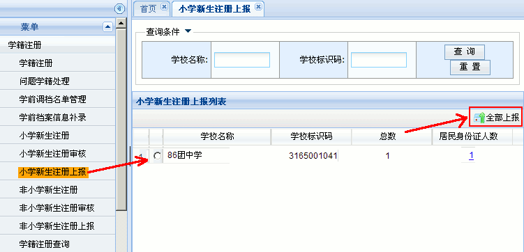
9）如果此时有问题，则提前给上一级管理员发消息，上级管理员审核时，点数字，按姓名找出学生，选中点“审核不通过”，退回来重新注册；
3、其他
1）导入模板时，提示“模板校验失败”，就是模板前七项或最后校验码被修改，需要到“学前调档名单管理”里，重新导出学生调档模板，对应好学生，选择性粘贴进去；
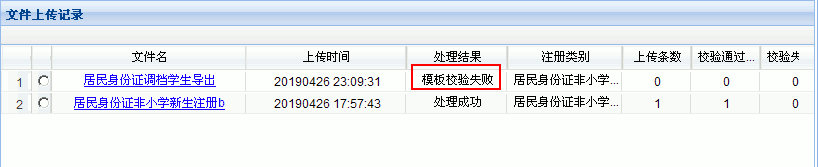
2）录入前，可以先在“学前调档名单管理”中，导出一个调档导出模板，适当修改后，发给学生家长填写，参考：一年级新生注册模板，填写要求参考一年级新生信息采集表；
本节学习了学籍注册的基础知识，如果你成功地完成了练习，请继续学习下一课内容；
本教程由TeliuTe制作|著作权所有
基础教程网：http://teliute.org/
美丽的校园……
转载和引用本站内容，请保留作者和本站链接。